fastmath.signal
Signal processing (effect) and generation (oscillators).
Singal is any sequence with double values.
Signal processing
To process signal use apply-effects or apply-effects-raw (operates on double-array only) function.
Effect is signal filter, created by effect multimethod. Effects can be composed with compose-effects. Effect can be treated as function and can be called for given sample.
Each effect has it’s own parametrization which should be passed during creation.
List of all available effects is under effects-list value.
Effects parametrization
Each effect has its own parameters.
:simple-lowpass, :simple-highpass
:rate- sample rate (default 44100.0):cutoff- cutoff frequency (default 2000.0)
:biquad-eq
Biquad equalizer
:fc- center frequency:gain- gain:bw- bandwidth (default: 1.0):fs- sampling rate (defatult: 44100.0)
:biquad-hs, :biquad-ls
Biquad highpass and lowpass shelf filters
:fc- center frequency:gain- gain:slope- shelf slope (default 1.5):fs- sampling rate (default 44100.0)
:biquad-lp, :biquad-hp, :biquad-bp
Biquad lowpass, highpass and bandpass filters
:fc- cutoff/center frequency:bw- bandwidth (default 1.0):fs- sampling rate (default 44100.0)
:dj-eq
:high- high frequency gain (10000Hz):mid- mid frequency gain (1000Hz):low- low frequency gain (100Hz):shelf-slope- shelf slope for high frequency (default 1.5):peak-bw- peak bandwidth for mid and low frequencies (default 1.0):rate- sampling rate (default 44100.0)
:phaser-allpass
:delay- delay factor (default: 0.5)
:divider
:denom(long, default 2.0)
:fm
Modulate and demodulate signal using frequency
:quant- quantization value (0.0 - if no quantization, default 10):omega- carrier factor (default 0.014):phase- deviation factor (default 0.00822)
:bandwidth-limit
https://searchcode.com/file/18573523/cmt/src/lofi.cpp#
:rate- sample rate (default 44100.0):freq- cutoff frequency (default 1000.0)
:distort
:factor- distortion factor (default 1.0)
:foverdrive
Fast overdrive
:drive- drive (default 2.0)
:decimator
:bits- bit depth (default 2):fs- decimator sample rate (default 4410.0):rate- input sample rate (default 44100.0)
:basstreble
:bass- bass gain (default 1.0):treble- treble gain (default 1.0):gain- gain (default 0.0):rate- sample rate (default 44100.0):slope- slope for both (default 0.4):bass-freq- bass freq (default 250.0):treble-freq- treble freq (default 4000.0)
:echo
:delay- delay time in seconds (default 0.5):decay- decay (amount echo in signal, default 0.5):rate- sample rate (default 44100.0)
Warning! Echo filter uses mutable array as a internal state, don’t use the same filter in paraller processing.
:vcf303
:rate- sample rate (default 44100.0):trigger- boolean, trigger some action (defaultfalse), set true when you reset filter every line:cutoff- cutoff frequency (values 0-1, default 0.8):resonance- resonance (values 0-1, default 0.8):env-mod- envelope modulation (values 0-1, default 0.5):decay- decay (values 0-1, default 1.0):gain- gain output signal (default: 1.0)
:slew-limit
http://git.drobilla.net/cgit.cgi/omins.lv2.git/tree/src/slew_limiter.c
:rate- sample rate:maxrise- maximum change for rising signal (in terms of 1/rate steps, default 500):maxfall- maximum change for falling singal (default 500)
:mda-thru-zero
:rate- sample rate:speed- effect rate:depth:mix:depth-mod:feedback
Warning: internal state is kept in doubles array.
Oscillators
oscillator creates function which generates signal value for given time.
To sample generated wave to signal, call oscillator->signal with following parameters:
f- oscillatorsamplerate- sample rate (samples per second)seconds- duration
To convert signal to oscillator (using interpolation) use signal->oscillator passing signal and duration.
Add oscillators using oscillators-sum.
File operations
You can save-signal or load-signal. Representation is 16 bit signed, big endian. Use Audacity or SoX to convert to/from audio files.
Categories
- Effects: apply-effects apply-effects-raw compose-effects effect effects-list
- oscillator: oscillator oscillator->signal oscillator-gain oscillators oscillators-sum signal->oscillator
- Signal: load-signal save-signal
Other vars: ->BiquadConf ->EffectsList ->SampleAndState ->StateBassTreble ->StateBiquad ->StateDecimator ->StateDivider ->StateEcho ->StateFm ->StateMdaThruZero ->StateVcf303 db->linear linear->db
apply-effects
(apply-effects in effects reset)(apply-effects in effects)Apply effects to signal as any sequence.
If reset is positive, reinit state each reset number of samples.
Returns new signal.
Examples
Usage
(let [lpf (effect :simple-lowpass {:cutoff 10000})
sgnal [-1.0 1.0 -0.5 0.5 -0.1 0.1 0 0]]
(apply-effects sgnal lpf))
;;=> (-0.5875878072514978
;;=> 0.34525943123062336
;;=> -0.15140470452482685
;;=> 0.23135275744022601
;;=> 0.03665391726918618
;;=> 0.07387530311895704
;;=> 0.030467075749249332
;;=> 0.012564993516382631)Reset state every two samples
(let [lpf (effect :simple-lowpass {:cutoff 10000})
sgnal [-1.0 1.0 -0.5 0.5 -0.1 0.1 0 0]]
(apply-effects sgnal lpf 2))
;;=> (-0.5875878072514978
;;=> 0.34525943123062336
;;=> -0.2937939036257489
;;=> 0.17262971561531168
;;=> -0.058758780725149784
;;=> 0.034525943123062335
;;=> 0.0
;;=> 0.0)apply-effects-raw
(apply-effects-raw in effects reset)(apply-effects-raw in effects)Apply effects to signal as double-array.
If reset is positive, reinit state each reset number of samples.
Returns new signal as double-array.
Examples
Usage
(let [lpf (effect :simple-lowpass {:cutoff 10000})
sgnal (m/seq->double-array [-1.0 1.0 -0.5 0.5 -0.1 0.1 0 0])]
(apply-effects-raw sgnal lpf))
;;=> [D@741d4ff5Reset state every two samples
(let [lpf (effect :simple-lowpass {:cutoff 10000})
sgnal (m/seq->double-array [-1.0 1.0 -0.5 0.5 -0.1 0.1 0 0])]
(seq (apply-effects-raw sgnal lpf 2)))
;;=> (-0.5875878072514978
;;=> 0.34525943123062336
;;=> -0.2937939036257489
;;=> 0.17262971561531168
;;=> -0.058758780725149784
;;=> 0.034525943123062335
;;=> 0.0
;;=> 0.0)compose-effects
(compose-effects e & es)Compose effects.
Examples
Usage
(let [lpf (effect :simple-lowpass)
hpf (effect :simple-highpass {:cutoff 2000.0})
composed (compose-effects lpf hpf)
result (composed 0.5)]
{"Composed effects" composed,
"After call on sample" result,
"Extracted sample" (result)})
;;=> {"After call on sample"
;;=> #object[fastmath.signal.EffectsList 0x408c030b "simple-highpass (0.38911967999610275) -> simple-lowpass (0.08629142927556396)"],
;;=> "Composed effects"
;;=> #object[fastmath.signal.EffectsList 0x2a88880d "simple-highpass (0.0) -> simple-lowpass (0.0)"],
;;=> "Extracted sample" 0.08629142927556396}db->linear
(db->linear x)DB to Linear
Examples
Usage
(db->linear 0.5)
;;=> 1.0592537251772889effect
multimethod
Create effect for given name (as keyword) and optional parameters.
List of all possible effects is under effects-list.
Effect is a custom type which contains: name, sample (result of last call), effect function and current state.
Effect can be considered as function: call with sample to effect with next state or call without parameter to obtain latest result. Effects are also composable with compose-effects.
Examples
Basic usage
(effect :fm)
;;=> fm (0.0)
(effect :fm {:quant 5})
;;=> fm (0.0)Use as a function
(let [fm (effect :fm)] (fm 0.5))
;;=> fm (-0.6932861325171887)Extract last result.
(let [fm (effect :fm) result (fm 0.5)] (result))
;;=> -0.6932861325171887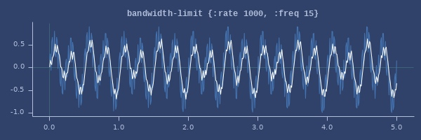Plot of bandwidth-limit
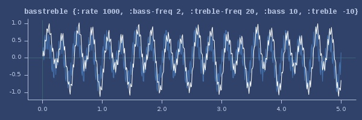Plot of basstreble
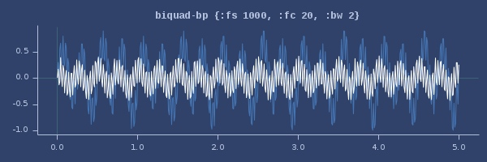Plot of biquad-bp
Plot of biquad-eq

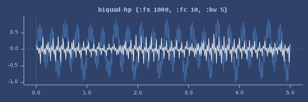Plot of biquad-hp
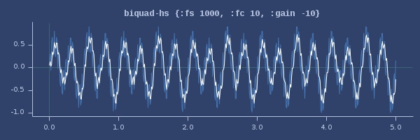Plot of biquad-hs
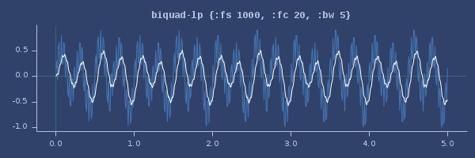Plot of biquad-lp
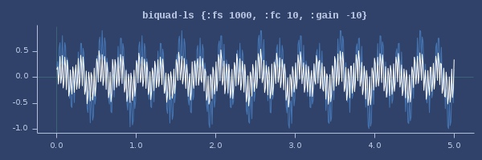Plot of biquad-ls
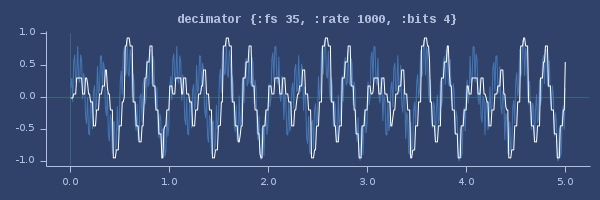Plot of decimator
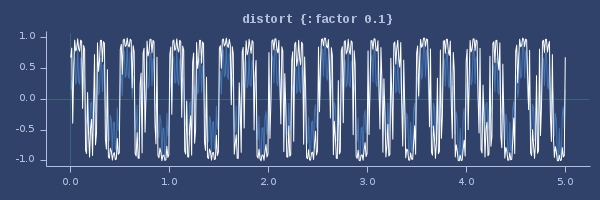Plot of distort
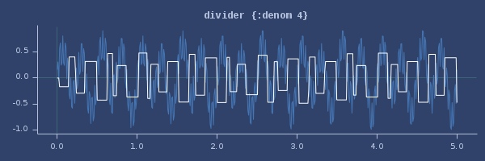Plot of divider
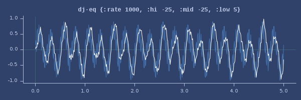Plot of dj-eq
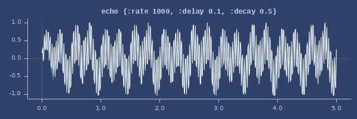Plot of echo
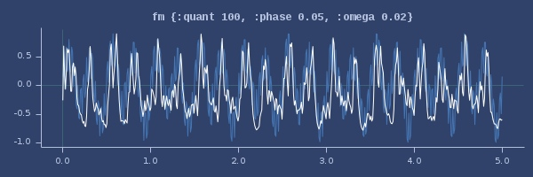Plot of fm
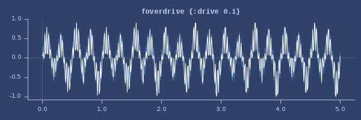Plot of foverdrive
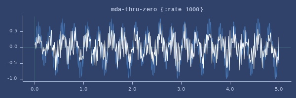Plot of mda-thru-zero
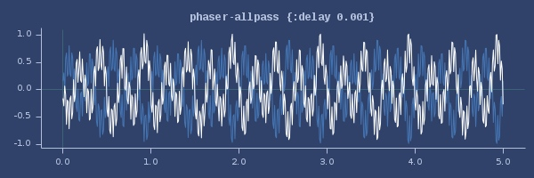Plot of phaser-allpass
Plot of simple-highpass

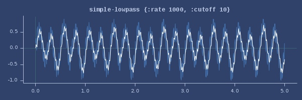Plot of simple-lowpass
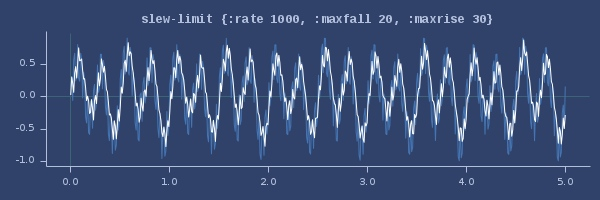Plot of slew-limit
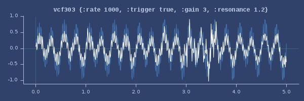Plot of vcf303
effects-list
List of effects.
Examples
List of all effects
effects-list
;;=> (:bandwidth-limit :basstreble :biquad-bp
;;=> :biquad-eq :biquad-hp
;;=> :biquad-hs :biquad-lp
;;=> :biquad-ls :decimator
;;=> :distort :divider
;;=> :dj-eq :echo
;;=> :fm :foverdrive
;;=> :mda-thru-zero :phaser-allpass
;;=> :simple-highpass :simple-lowpass
;;=> :slew-limit :vcf303)linear->db
(linear->db x)Linear to DB
Examples
Usage
(linear->db 0.5)
;;=> -6.020599913279624load-signal
(load-signal filename)Read signal from file
Expected representation is 16 bit signed, big endian file.
Examples
Usage
(let [s (oscillator->signal (oscillator :sin 1 1 0) 11050 5)]
(save-signal s "signal.raw")
{:out (nth (load-signal "signal.raw") 20), :in (nth s 20)})
;;=> {:in 0.011372035973350892, :out 0.011367971313038794}oscillator
multimethod
Create oscillator.
Parameters are:
- oscilator name (see
oscillatorsvariable) - frequency
- amplitude
- phase (0-1)
Multimethod creates oscillator function accepting double (as time) and returns double from [-1.0 1.0] range.
To convert oscillator to signal, call signal-from-oscillator.
To add oscillators, call sum-oscillators.
Examples
Usage
(let [wave-sin (oscillator :sin 1.0 1.0 0.5)] (wave-sin 0.1))
;;=> -0.5877852522924728
(let [wave-noise (oscillator :triangle 0.1 1.0 0.123)] (wave-noise 0.1))
;;=> 0.9108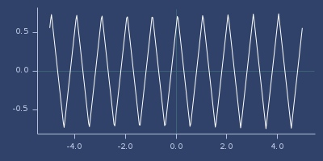Plot of triangle
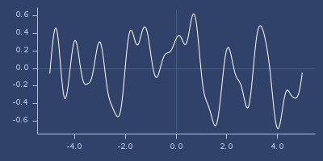Plot of noise
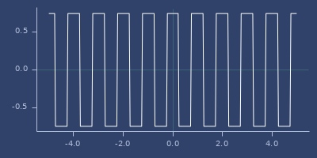Plot of square
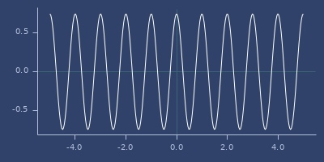Plot of sin
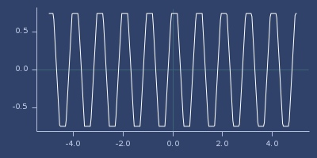Plot of cut-triangle
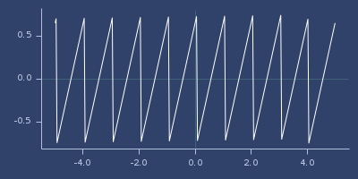Plot of saw
oscillator->signal
(oscillator->signal f samplerate seconds)Create signal from oscillator.
Parameters are:
- f - oscillator
- samplerate - in Hz
- seconds - duration
Returns sampled signal as double array.
Examples
Usage
(let [w (oscillator :sin 0.2 0.9 0.2)] (oscillator->signal w 44100 5))
;;=> [D@5bd5ed6oscillator-gain
(oscillator-gain fs gain)Examples
Usage
(let [wave-sin (oscillator :sin 1.0 1.0 0.5)
gained (oscillator-gain wave-sin 0.22)]
{:original (wave-sin 0.75), :gained (gained 0.75)})
;;=> {:gained 0.22, :original 1.0}oscillators
List of oscillator names used with oscillator
Examples
List of oscillators
oscillators
;;=> (:constant :cut-triangle :noise :saw :sin :square :triangle)oscillators-sum
(oscillators-sum & fs)Create oscillator which is sum of all oscillators.
Examples
Usage
(let [w1 (oscillator :triangle 1.5 0.5 0.5)
w2 (oscillator :sin 1 0.5 0)
sum (oscillators-sum w1 w2)]
(sum 0.5))
;;=> -0.24999999999999994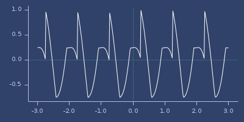Signal plot
save-signal
(save-signal sig filename)Save signal to file.
Representation is: 16 bit signed, big endian file You can use Audacity/SOX utilities to convert files to audio.
Examples
Usage
(let [s (oscillator->signal (oscillator :sin 1 1 0) 11050 5)]
(save-signal s "signal.raw"))
;;=> [D@6baac161signal->oscillator
(signal->oscillator sig seconds)(signal->oscillator sig seconds interpolator)Create oscillator from signal.
Parameters:
- sig - signal as sequence
- seconds - duration
- interpolator - interpolation (see fastmath.interpolation). Default: linear-smile.
Examples
Usage
(let [w (oscillator :sin 0.2 0.9 0.2)
w2 (signal->oscillator (oscillator->signal w 44100 5) 5)]
{:original (w 0.5), :converted (w2 0.5)})
;;=> {:converted 0.8559508646656382, :original 0.8559508646656382}